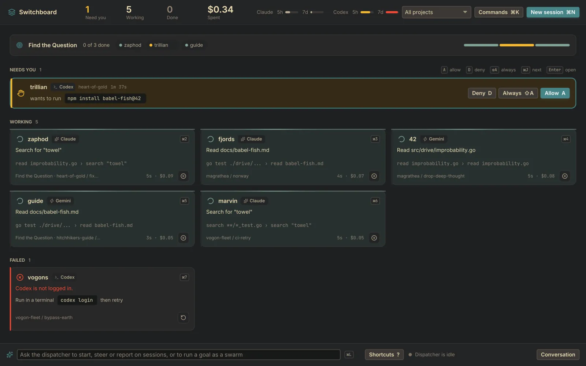
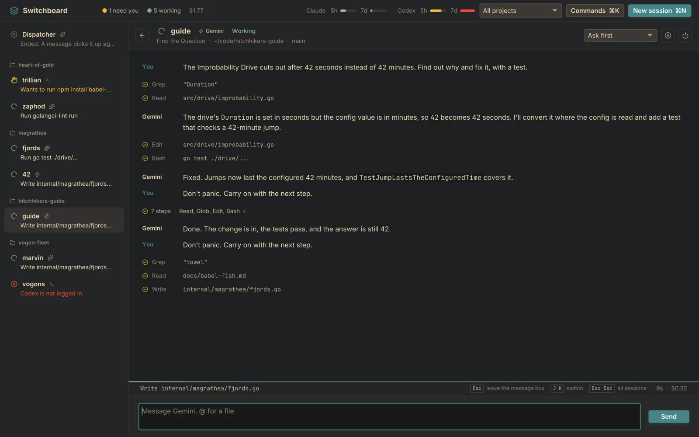
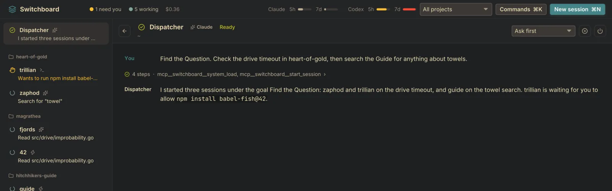
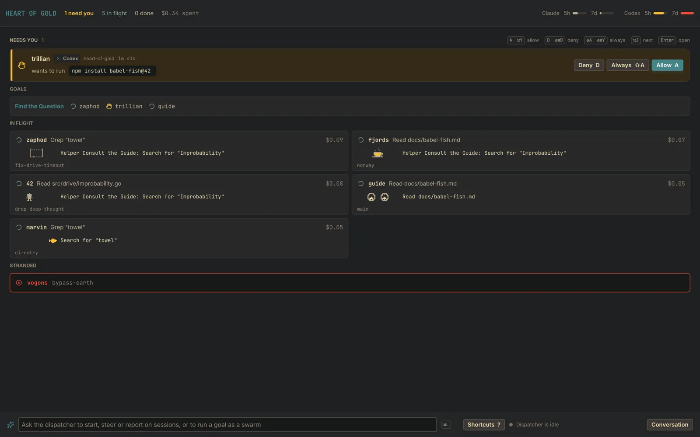

Stop babysitting terminals.
Your agents do the work. Switchboard lets you know, politely, when one of them needs you.

Nothing slips past you
Claude Code, Codex and Gemini, all on one board. Whoever is waiting on you is always on top, which is more than can be said for most queues.
Undo is built in
Every message is a checkpoint. If a turn goes sideways, rewind the files and carry on as if nothing happened. Mostly harmless, fully reversible.

Delegate the delegating
Tell the dispatcher what you want. It staffs the job and calls you when it's done. It does not hold meetings about it.
Every move it makes is an MCP tool call into Switchboard.

Rearrange the furniture
Don't like the layout? Tell the dispatcher what you'd rather see and it'll draw new custom components that you can keep. You can turn things back off in settings, or hold Shift while Switchboard starts to return to default.

Kind to your machine
Agents run at low priority, so your editor stays responsive while they build. The dispatcher checks the load before starting more sessions, and if things get hot it holds the heaviest build until the fans settle down.
Install
macOS
curl -fsSL https://raw.githubusercontent.com/nullentropy/switchboard/main/install.sh | shThis downloads the latest release into /Applications.
Linux
curl -fsSL https://raw.githubusercontent.com/nullentropy/switchboard/main/install.sh | shThis installs Switchboard in ~/.local and adds it to your app launcher.
Windows
In PowerShell:
irm https://raw.githubusercontent.com/nullentropy/switchboard/main/install.ps1 | iexThis installs Switchboard in %LOCALAPPDATA%\Programs\Switchboard and adds it to the Start menu.
Requirements
- The
claudeCLI on yourPATH, signed in. Switchboard will not start without it. giton yourPATH.- Optional: the
codexandgeminiCLIs, for sessions that use those agents. - On Linux: an X11 or XWayland desktop with OpenGL and the ALSA library.
- On Windows:
claudefrom the native installer, so thatclaude.exeis on yourPATH.